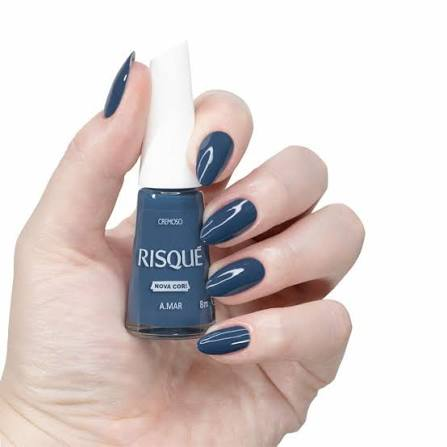
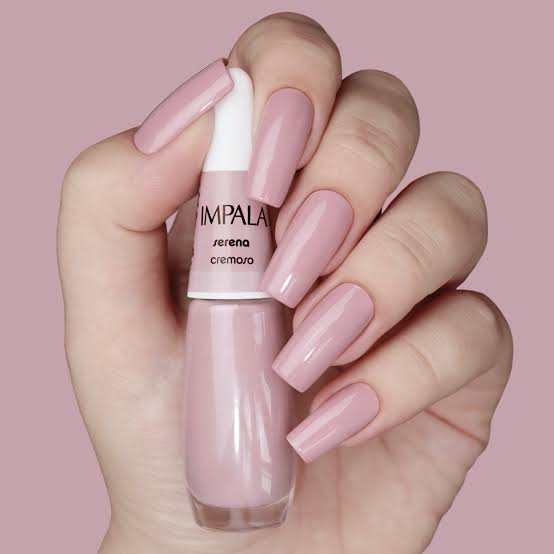
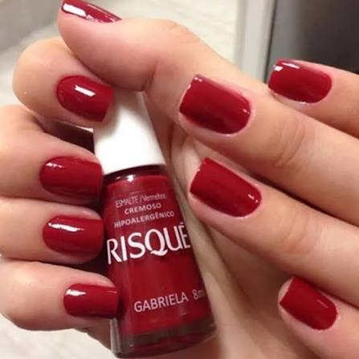

Sobre
Nosso site, são para mulheres e meninas que gostam de se cuidar e se manterem sempre atentas nas novas novidades das marcas de esmalte. Todos os dias atualizamos nosso site, muitas vezes trazendo as sugestões do que vocês mandam para nós. Nosso objetivo, é ajudar vocês a se antenarm e acharem cores e nomes de esmaltes, a fim de trazer um realizamento a todas vocês!
Aqui você encontra as mais novas tendências, dicas, acolhimento para todos os gostos. A fundadora do nosso site é uma mulher, a qual busca. Nosso slogan é de mulher para
Camilla também possui um lado artístico e criativo muito presente em sua vida. Ama cantar, dançar, desenhar, cozinhar, ler livros, ouvir música e assistir filmes.
Durante a infância, adorava montar cabanas com cortinas e brincar junto com suas amigas, criando histórias e momentos especiais. Também fez balé aos sete anos e mais tarde participou do street dance.
Camilla é estudante, já foi catequista e participou do primeiro EJC de Getúlio Vargas.
Entre seus hobbies favoritos estão cantar, dançar, cozinhar, ler, escutar música, assistir filmes e desenhar.
O esporte ocupa um espaço importante em sua vida. Apaixonada por voleibol, joga sempre que pode e também ama o universo da academia, principalmente a prática dos exercícios físicos.
Camilla valoriza os pequenos detalhes da vida, ama borboletas, flores, crianças, idosos e livros. Gosta do silêncio, mas também aprecia uma boa música e momentos divertidos ao lado das pessoas que ama.
Como qualquer pessoa, também enfrenta inseguranças, medos e desafios pessoais, mas busca diariamente amadurecer, evoluir emocionalmente e se tornar uma pessoa melhor.
Entre seus maiores sonhos estão conquistar sua independência, construir uma família, trabalhar com algo que ame e viver uma vida feliz e cheia de gratidão.
Conhecida carinhosamente como “Milla”, acredita que a vida é feita de evolução constante, aprendizado e recomeços.